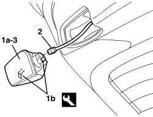
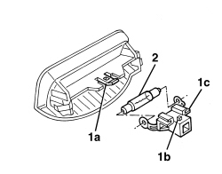

7040G36 BULB HOLDER FOR LOAD CARRYING COMPARTMENT lighting on tailgate - R.R.
- Path
- Procedures > 70 FITTINGS > 7040 BODY INTERIOR FITTINGS AND TRIM > 7040G VEHICLE COMPARTMENT LIGHTING SYSTEM > 7040G36 BULB HOLDER FOR LOAD CARRYING COMPARTMENT lighting on tailgate - R.R.
- Kind
- repair procedure (removal / refitting; the operation number is the code)
- Applies to
- all engines; all production periods; only with equipment: Station Wagon
- Interactive page
- https://sloeber94.github.io/elrnDB/alfa/159/en/#/939005460
Applies to: all engines; all production periods; only with equipment: Station Wagon
 Removing
Removing
 Refitting
Refitting- Open the tailgate.
1. Release the courtesy light (1a) releasing the retainers (1b) using the special tool.
Tool | Description | Function | Validity |
|---|---|---|---|
1823014000 | Knife | Retainer removal |
2. Disconnect the electrical connection.
Description | Component |
|---|---|
TAILGATE COURTESY LIGHT |
3. Keep the courtesy light.

Applies to: all engines; all production periods; only with equipment: Station Wagon
1. If necessary, release the tab (1a) from the retainer (1b) and extract the bulb holder (1c).
2. Extract the bulb from the retaining springs.

Applies to: all engines; all production periods; only with equipment: Station Wagon
Refitting
Removing- Check that the courtesy light is not damaged.
- If removed, fit the bulb between the retaining springs, then fit the bulb holder in the courtesy light.
- Place the courtesy light in position.
- Connect the electrical connection.
- Fit the courtesy light and attach the flexible retainers.
- Check that the bulb is working.
Topics linked from this page (1)
Topics that link to this page (14)
- 5050C42 REAR WIPER MOTOR - R+R
- 5505B55 TAIL-GATE WIRING - R R
- 5550D16 THIRD BRAKE LIGHT - R+R
- 5550D86 THIRD BRAKE LIGHT CABLE LOOM - R.R. OR REPLACE
- 7015A05 TAILGATE LOWER INTERIOR PANEL-R R
- 7015A06 TAILGATE UPPER INTERIOR PANEL - R.R.
- 7015B15 TAILGATE SINGLE LOCK - R.R.
- 7015B70 TAILGATE LOCK MOTOR - R.R AND CHECK LOCK SUPPLY LINE
- 7035B14 REAR WINDOW GLASS - R.R INCLUDES CLEANING HOUSING
- 7055A83 BADGE ON TAILGATE - R.R
- 7210E56 R.R. TAILGATE
- 7210G76 REAR SPOILER - R.R.
- E2520 GLOVE COMPARTMENT LIGHT - BOOT LIGHT - SUN VISOR LIGHT - WIRING DIAGRAM
- E2520 GLOVE COMPARTMENT LIGHT - BOOT LIGHT - SUN VISOR LIGHT - COMPONENT LOCATION